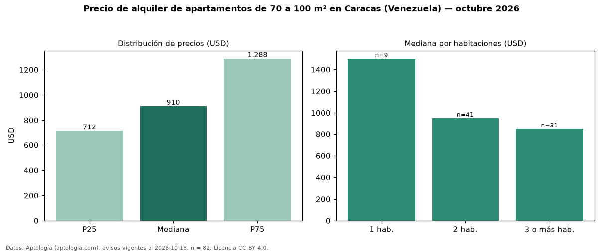

Precio de alquiler de apartamentos de 70 a 100 m² en Caracas (Venezuela) — octubre 2026
USD 910 al mes es el canon mediano de apartamentos de 70 a 100 m² en alquiler en Caracas (Venezuela) (n = 82 avisos). Eso es 30 % menos que la mediana de todos los apartamentos en alquiler de Caracas (USD 1.300, n = 334); este segmento reúne el 25 % de esos avisos. Por metro cuadrado, la mediana es USD 10,71/m² al mes (n = 81), 11 % por debajo del conjunto de referencia (USD 12,10/m²). El área mediana anunciada es 84 m². El segmento con más oferta es el de 2 habitaciones (41 avisos, mediana USD 950); pasar de 1 habitación a 3 o más habitaciones cambia la mediana −43 %. La mitad central de los avisos va de USD 712 a USD 1.288 (razón 1,8), una dispersión moderada. 92 % de los avisos con el dato declara estacionamiento o cochera. Datos: Aptología (aptologia.com), CC BY 4.0 — https://www.aptologia.com/ve/alquiler/caracas. Archivos: PDF, CSV con las cifras y gráfica PNG.

| Avisos únicos | 82 |
|---|---|
| Percentil 25 | COP 712 |
| Mediana | COP 910 |
| Percentil 75 | COP 1.287 |
| Mediana por m² | COP 10 |
Fuente: avisos vigentes de portales inmobiliarios recopilados por Aptología, deduplicados (mínimo 30 avisos únicos por celda). Precios pedidos, no cerrados. Fecha: 2026-10-18.